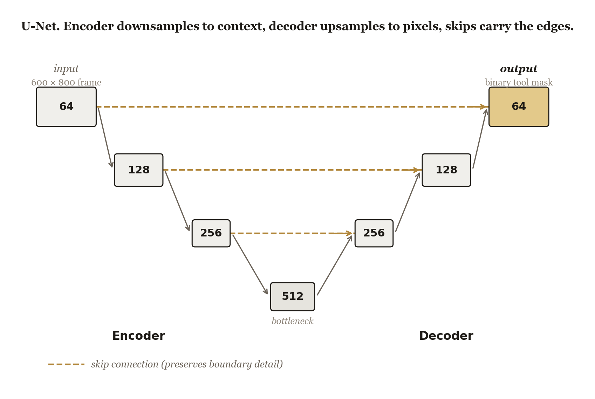
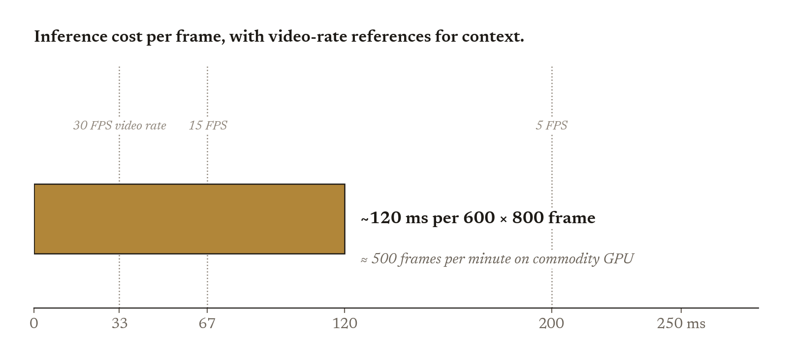

A U-Net trained on 300 hand-labeled frames captured through a Modus V exoscope at Synaptive Medical and Robarts Research Institute, segmenting tools from tissue at ~95% DICE in under 0.12 s per frame.
A convolutional segmentation network that traces surgical instruments out of background tissue, frame by frame, on real operating-room footage rather than phantoms or simulated images. Trained on 300 hand-labeled frames from a Modus V exoscope, then validated on a fully held-out surgical video across four lighting and tool-count scenarios.
The model is a U-Net (Ronneberger et al., 2015), picked because its skip connections preserve the fine spatial detail that lands the tool boundary. Fluorescent-blue frames are converted to grayscale first: the network learns the tool more cleanly from intensity than from hue.
The novelty is not the architecture. It is the data, the partnership, and the deployment context: real exoscope footage on real tissue, not Cholec80 phantoms or synthetic renders; regular and fluorescence-guided imaging in one model; and a real-time inference loop on commodity hardware, demonstrated on video the network never saw.
Minimally invasive surgery asks the surgeon to operate through a keyhole. The camera replaces direct sight, depth perception collapses to a 2D feed, and the instrument tip routinely leaves and reenters the field. Existing literature attributes roughly 30% of complications in this setting to in-procedure misrecognition: tools confused with tissue, edges lost under fluorescence, occlusion read as background.
U-Net was designed for exactly this regime: per-pixel classification on small biomedical datasets (300 frames, not 30,000), where the architecture has to compensate for what the data lacks.
The architecture is from 2015. The contribution is the dataset, the lighting range, and the partnership that made both possible.
Everything below is engineering on top of those three. The architecture is the smallest piece.
Standard U-Net. Three downsampling blocks (64, 128, 256 channels), a single 512-channel bottleneck, three upsampling blocks (256, 128, 64), and a final 1×1 convolution that produces the per-pixel tool probability. Skip connections concatenate encoder and decoder feature maps at matching resolution.

300 frames sampled from the Modus V recording. Each frame was hand-segmented in ITK-SNAP into a binary tool / background mask, exported as NIfTI (for downstream tooling) and PNG (for training), and reviewed twice before entering the training set.
Evaluation runs on a fully held-out surgical video, captured separately and never seen in training. Frames are segmented individually and recompiled into a side-by-side overlay against the original footage. Four scenarios, 20 random images each:
The canonical case (regular, one tool) is the closest analogue to a standard intraoperative view and the headline number. The other three test how the model degrades away from it.
DICE on the binary mask is the quantitative metric; the side-by-side overlay is the qualitative check.

The 95% number is the canonical case on n = 20 random frames from a single held-out video, single seed, single procedural source. It is not a leaderboard claim against published surgical-vision benchmarks. Read it as "this model works at video-realistic accuracy on data from this Modus V procedure," not as a SOTA result.
A real-time tool overlay trained on real surgical footage, rather than phantoms or synthetic renders, is a concrete step toward safer minimally invasive procedures. If an overlay that reliably traces tool boundaries recovers even a fraction of the 30% misrecognition share of intraoperative complications, the result is fewer nerve injuries, fewer collateral tissue insults, and fewer follow-on operations. Retrained on appropriate data, the same architecture extends to tumor delineation, organ boundaries for surgical planning, and quantitative tracking of disease progression on CT and MRI volumes.
Surgical footage and procedural context provided by Synaptive Medical Inc., whose Modus V exoscope captured every frame in the training set. Tissue and clinical guidance provided by Robarts Research Institute at Western University. Recognized with a Bronze Medal at the Canada-Wide Science Fair.
The architecture is U-Net from Ronneberger et al., 2015.
@inproceedings{ronneberger2015unet,
title = {U-Net: Convolutional Networks for Biomedical Image Segmentation},
author = {Ronneberger, Olaf and Fischer, Philipp and Brox, Thomas},
booktitle = {Medical Image Computing and Computer-Assisted Intervention (MICCAI)},
year = {2015},
url = {https://arxiv.org/abs/1505.04597}
}